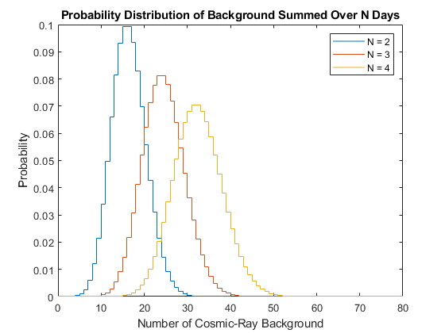
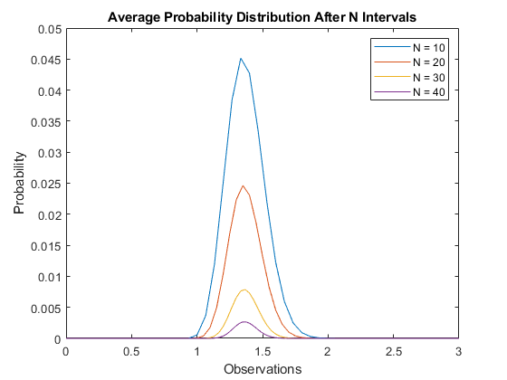
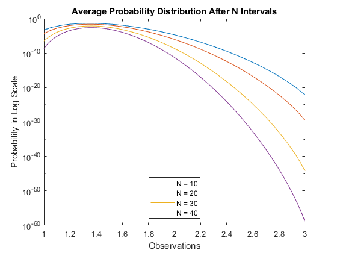
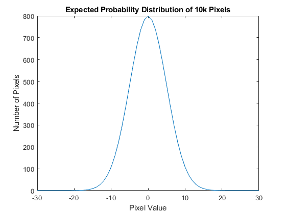

Lab 2
Contents
Problem 1
In this section, we see gamma-ray sources and a background of cosmis-rays using Fermi telescope. I selected my average cosmic-ray background value as X = 8 and my average number of gamma-rays emmitted as Y = 16.
Section 1A
Shows how the probability distribution changes as we integrate (sum) for more days by convolving the background with itself N times. We notice how the mean shifts, the width becomes wider and the amplitude at the mean decreases as we integrate for more days. Also, the distribution is still a Poisson distribution.
pdist = makedist("Poisson",'lambda',8); pbg = pdf(pdist,0:20); % Sum over 2 days pconv = multiconv(pbg,2); px = 0:length(pconv)-1; stairs(px, pconv); hold on; % Sum over 3 days pconv = multiconv(pbg,3); px = 0:length(pconv)-1; stairs(px, pconv); hold on; % Sum over 4 days pconv = multiconv(pbg,4); px = 0:length(pconv)-1; stairs(px, pconv); hold on; title("Probability Distribution of Background Summed Over N Days"); xlabel("Number of Cosmic-Ray Background"); ylabel("Probability"); legend("N = 2","N = 3","N = 4"); hold off; figure; % Below, we put these graphs from above in semilog plot. % Sum over 2 days in log scale pconv = multiconv(pbg,2); px = 0:length(pconv)-1; stairs(px, pconv); set(gca,'YScale','log'); hold on; % Sum over 3 days in log scale pconv = multiconv(pbg,3); px = 0:length(pconv)-1; stairs(px, pconv); set(gca,'YScale','log'); hold on; % Sum over 4 days in log scale pconv = multiconv(pbg,4); px = 0:length(pconv)-1; stairs(px, pconv); set(gca,'YScale','log'); hold on; xlim([0 40]); title("Probability Distribution of Background Summed Over N Days"); xlabel("Number of Cosmic-Ray Background"); ylabel("Probability in Log Scale"); legend("N = 2","N = 3","N = 4",'Location','South'); hold off; figure;
Section 1B
Shows how the summed probability distribution is still a Poisson distribution after 5 days.
% Sum over 5 days in log scale pconv = multiconv(pbg,5); px = 0:length(pconv)-1; subplot(2,1,2); stairs(px, pconv); title("Probability Distribution After 5 Days in Log Scale"); xlabel("Number of Cosmic-Ray Background"); ylabel("Probability in Log Scale"); set(gca,'YScale','log') % Sum over 5 days subplot(2,1,1) stairs(px, pconv); title("Probability Distribution After 5 Days"); xlabel("Number of Cosmic-Ray Background"); ylabel("Probability"); figure; % Here, we see how the summed probability distribution is still a Poisson % distribution. From a mathematical perspective, this makes sense because % the distribution does not have a small enough step size to approximate a % Gaussian distribution over 5 days. From a conceptual perspective, this % makes sense because we cannot have negative counts which is why we don't % observe any events before 0. From the semilog plot, we can see how the % distribution isn't symmetric because we cannot observe anything at % negative counts.

Section 1C
Shows how the probability distribution evolves as we average days. The shape of the distribution gets thinner and the discrete features almost smooths out as the number of days become larger. This can be explained by the Central Limit Theorem which states a distribution will approximate a normal distribution as the sample size becomes larger. In relation to Problem 1B, we can see how the step size of the distribution gets smaller. We expect the step size to become so small that it can approximate a normal distribution according to the Central Limit Theorem.
% Average over 2 days pconv = multiconv(pbg,2); px = 0:length(pconv)-1; stairs(px/2, pconv); hold on; % Average over 5 days pconv = multiconv(pbg,5); px = 0:length(pconv)-1; stairs(px/5, pconv); hold on; % Average over 10 days pconv = multiconv(pbg,10); px = 0:length(pconv)-1; stairs(px/10, pconv); hold on; % Average over 15 days pconv = multiconv(pbg,15); px = 0:length(pconv)-1; stairs(px/15, pconv); hold on; % Average over 20 days pconv = multiconv(pbg,20); px = 0:length(pconv)-1; stairs(px/20, pconv); hold on; title("Average Probability Distribution After N Days"); xlabel("Number of Cosmic-Ray Background"); ylabel("Probability"); legend("N = 2","N = 10","N = 15","N = 20"); hold off; figure; % Below, we put these graphs from above in semilog plot. % Average over 2 days in log scale pconv = multiconv(pbg,2); px = 0:length(pconv)-1; stairs(px/2, pconv); set(gca,'YScale','log'); hold on; % Average over 5 days in log scale pconv = multiconv(pbg,5); px = 0:length(pconv)-1; stairs(px/5, pconv); set(gca,'YScale','log'); hold on; % Average over 10 days in log scale pconv = multiconv(pbg,10); px = 0:length(pconv)-1; stairs(px/10, pconv); set(gca,'YScale','log'); hold on; % Average over 15 days in log scale pconv = multiconv(pbg,15); px = 0:length(pconv)-1; stairs(px/15, pconv); set(gca,'YScale','log'); hold on; % Average over 20 days in log scale pconv = multiconv(pbg,20); px = 0:length(pconv)-1; stairs(px/20, pconv); set(gca,'YScale','log'); hold on; title("Average Probability Distribution After N Days"); xlabel("Number of Cosmic-Ray Background"); ylabel("Probability in Log Scale"); legend("N = 2","N = 10","N = 15","N = 20",'Location','South'); hold off; figure;
Section 1D
For this problem, I will choose my number of days as N = 8. According to this problem, I will see Y*N gamma rays which is 128. In order to find the associated sigma to a signal of 128, I must find the distribution after 8 days which is why we convolve the background with itself 8 times. Afterwards, I must integrate my distribution from negative infinity to the signal. Then I must subtract one by this result since we are interested in signals that are bigger than 128 which are on the right tail of this distrubtion.
pconv = multiconv(pbg,8); psum = 0; for c = 1:128 psum = psum+pconv(c); end psigma = norminv(1-psum); disp(psigma);
-3.1741
Problem 2
Now, we are interested in a background over some observing interval in a skewed continuous distribution like a Rayleigh distribution.
Section 2A
Shows how Rayleigh distribution changes as we average over more observing intevals. Similar to the previous problem, we notice how the mean doesn't shift and the amplitude at the mean decreases. Also, the shape of the distribution approximates a normal distribution when the observing interval becomes large enough according to the Central Limit Theorem.
rdist = makedist("Rayleigh"); rbg = pdf(rdist,0:3); % Average over 15 observing intervals rconv = multiconv(rbg,15); rx = 0:length(rconv)-1; plot(rx/15,rconv); hold on; % Average over 20 observing intervals rconv = multiconv(rbg,20); rx = 0:length(rconv)-1; plot(rx/20,rconv); hold on; % Average over 30 observing intervals rconv = multiconv(rbg,30); rx = 0:length(rconv)-1; plot(rx/30,rconv); hold on; % Average over 40 observing intervals rconv = multiconv(rbg,40); rx = 0:length(rconv)-1; plot(rx/40,rconv); hold on; title("Average Probability Distribution After N Intervals"); xlabel("Observations"); ylabel("Probability"); legend("N = 10","N = 20","N = 30","N = 40"); hold off; figure; % Below, we put these graphs from above in semilog plot. % Average over 15 observing intervals in log scale rconv = multiconv(rbg,15); rx = 0:length(rconv)-1; plot(rx/15,rconv); set(gca,'YScale','log'); hold on; % Average over 20 observing intervals in log scale rconv = multiconv(rbg,20); rx = 0:length(rconv)-1; plot(rx/20,rconv); set(gca,'YScale','log'); hold on; % Average over 30 observing intervals in log scale rconv = multiconv(rbg,30); rx = 0:length(rconv)-1; plot(rx/30,rconv); set(gca,'YScale','log'); hold on; % Average over 40 observing intervals in log scale rconv = multiconv(rbg,40); rx = 0:length(rconv)-1; plot(rx/40,rconv); set(gca,'YScale','log'); hold on; title("Average Probability Distribution After N Intervals"); xlabel("Observations"); ylabel("Probability in Log Scale"); legend("N = 10","N = 20","N = 30","N = 40",'Location','South'); hold off; figure; 
Section 2B
According to the Central Limit Theorem, the distribution should approximate a normal distribution when the observing interval increases. As the average observing intervals increased, the Rayleigh distribution changed. Specifically, the width becomes thinner, the amplitude at the mean decreased, and the shape became smoother. However, the mean did not shift. The Rayleigh distribution approached a Gaussian distribution after approximately 40 intervals according to the semilog plots from the previous part.
Problem 3
We are using an optical telescope with thermal noise background from the CCD. After flat-fielding, the background appears as a zero-mean Gaussian with constant width over the image. For this section, I selected the width of the background Gaussian distribution as X = 5 and the signal of strength as Y = 26.
Section 3A (Version 1)
Here, we make a Gaussian distribution with mu = 0 and sigma = 5. Afterwards, we calculate the probability of a signal of 26 using the cdf() function. We put this value into the norminv() function calculate the sigma. From this, we get a sigma of 5.2 which means we can claim a discovery since that's associated with 5-sigma and our sigma is greater than 5-sigma.
gdist = makedist("Normal",'mu',0,'sigma',5); gprob = cdf(gdist,26); gsigma = norminv(gprob); disp(gsigma);
5.2000
Section 3B (Version 2)
The statistical question I want to ask is "What is the expected number of pixels we will be see given a signal reading of some strength?" This shows a probability distribution of 10k pixels.
gdist = makedist("Normal",'mu',0,'sigma',5); gpdf = pdf(gdist,-30:30); gprobf = gpdf*10000; gbg = plot(-30:30,gprobf); title("Expected Probability Distribution of 10k Pixels"); xlabel("Pixel Value"); ylabel("Number of Pixels"); % The probability we get at least one signal-like event from the background % is the probability we get from one of these pixels. If we assume the % distributions for each pixel are identical and independent from one % another, we simply multiply the pdf of one pixel by 10k.
Section 3C (Version 2)
Calculates the signifance of the detection of the brightest candidtate pixel from the region with signal 26.
gdist = makedist("Normal",'mu',0,'sigma',5); gprob = (1-cdf(gdist,26))*10000; gsigma = norminv(gprob); disp(gsigma);
-3.0913
Problem 4
Section 4A
Calculates the signal required for a 5-sigma detection in Problem 3A Version 1. Uses norminv() function with mu=0 and sigma=5. We found we need a signal of 25 to get 5-sigma detection.% Below, we put these graphs from above in semilog plot.
gsignal = norminv(normcdf(5),0,5); disp(gsignal);
25.0000
Section 4B
Calculates the signal required for a 5-sigma detection in Problem 3C Version 2. We found we need a signal of 32 to get 5-sigma detection.
prob5sigma = 1/3.5e6; gdet = icdf(gdist, 1-prob5sigma/10000); disp(gdet);
32.7551
Section 4C
From our answers from 4A and 4B, we get 25 and 32 respectively. Comparing these values, we see the signal needs to be 28% brighter for discovery if I have a trial factor of 10k. The sensitivity penalty is so low because the probability decreases by orders of magnitude further out in the tails to account for a larger probability near the mean. So the probability falls fast when the measurement slightly increases out in the tail.
Section 4D
Shows how the 5-sigma sensitivity threshold changes when the trial factor changes significantly by orders of magnitude. Here, we see how the detection required doesn't increase too significantly.
prob5sigma = 1/3.5e6; % Trial factor is 10k t = 10000; gdet = icdf(gdist, 1-prob5sigma/t); disp(gdet); % Trial factor is 100k t = 100000; gdet = icdf(gdist, 1-prob5sigma/t); disp(gdet); % Trial factor is 1000k t = 1000000; gdet = icdf(gdist, 1-prob5sigma/t); disp(gdet);
32.7551 34.4330 36.0358